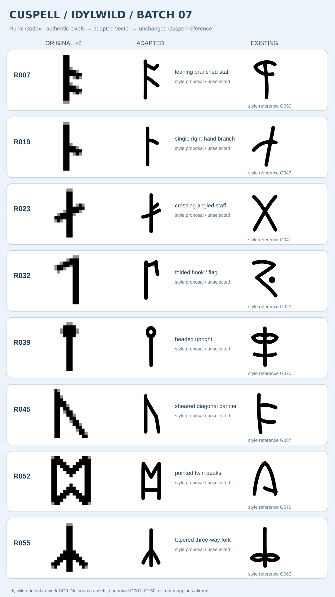
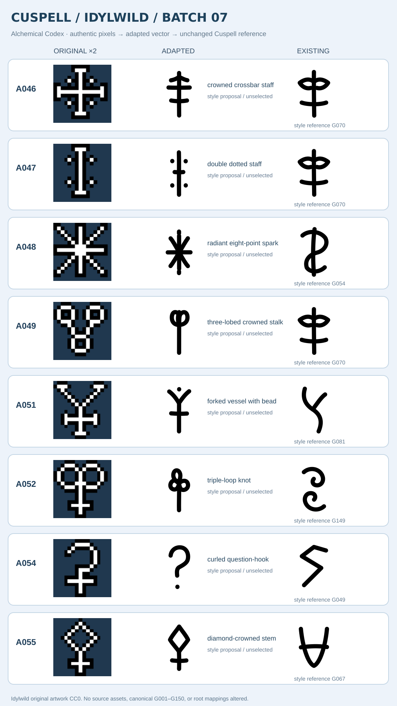

Left: actual Idylwild source pixels. Center: proposed Cuspell-compatible vector. Right: an unchanged current Cuspell visual reference. IDs and meanings have not been adopted.
Runic Codex

Alchemical Codex

Attribution: Idylwild, CC0. Source ZIPs and canonical Cuspell art preserved unchanged.